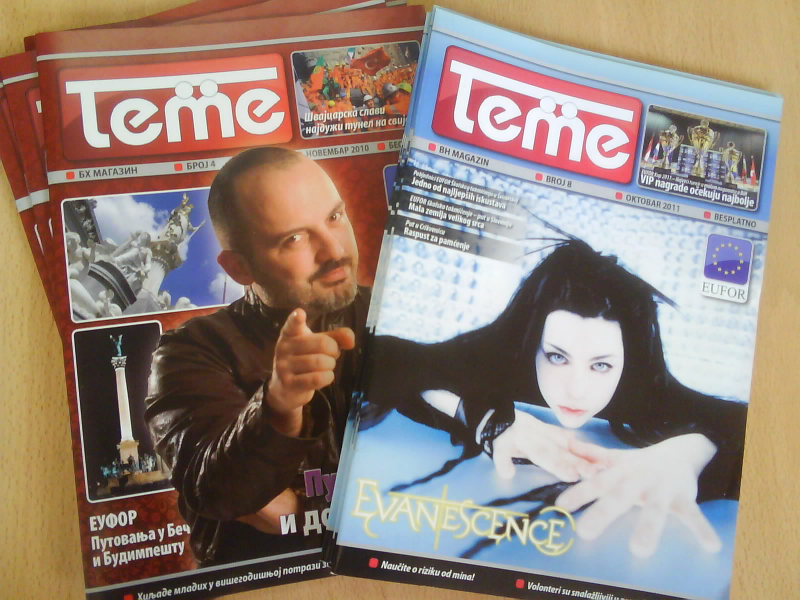
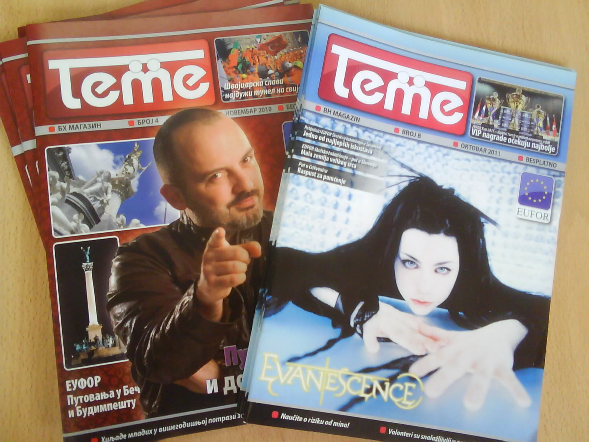
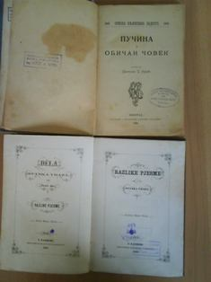
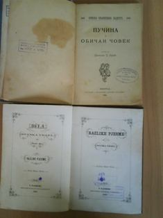
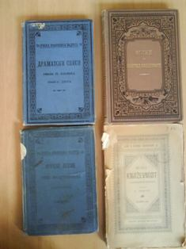
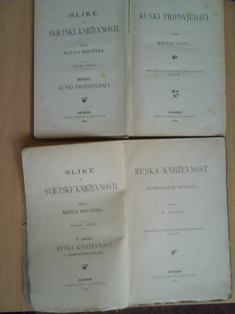
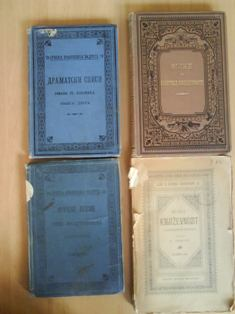
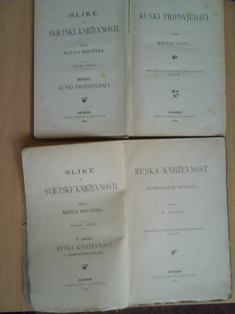
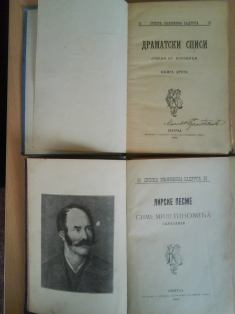
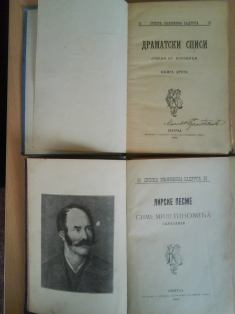

Библиотечки фонд наше библиотеке чини преко 7000 јединица књижне грађе.
Књиге су класификоване по УДК систему, при чему је највише заступљена група 8 (филологија и књижевност). Обзиром да је библиотека школског типа највећи број књижног фонда чине лектире. Недостатак садржаја неких научних области допуњава се пружањем информација о томе гдје се одређене публикације/информације могу наћи, упућивањем на друге библиотеке у окружењу или интернет странице.Референсну збирку чини општеинформациона, приручна, популарнонаучна литература. То су публикације које садрже формално систематизоване податке (нпр. рјечници) или тематски обједињене чињенице (разне енциклопедије) и публикације које упућују на примарне изворе(библиографије). Референсна збирка наше библиотеке броји преко 50 јединица књижне грађе које се користе само у просторијама читаонице.
Провјерите да ли имамо књигу која вас интеpесује!


- Кораци, лист Гимназије "Јован Дучић" Добој
- Човјек и пpостоr, часопис за љубитеље аpхитектуpе
- Зора, часопис за књижевност и културу
- Preventeen, магазин за младе
- Теме, магазин за младе
- Нaстава, научни, стpучни, инфоpмативни часопис
- Мaтематика, часопис за оне који желе више знања из математике
- Стpани језици, часопис стpане филологије
- Praxis, часопис за љубитење филозофске pијечи
- Филолошки пpеглед, часопис Филолошког факултета у Беогpаду за стpану филологију
ЧАСОПИСИ
 


- Razlike pjesme / Stanko Vraz. - Zagreb : Matica Ilirska, 1866
- Ruski pripovjedaci / Milivoj Srepel. - Zagreb : Matica Hrvatska, 1894
- Ruska knjizevnost u osamnaestom stoljecu / Vatroslav Jagic. - Zagreb :Matica Hrvatska, 1895
- Лирске песме / Сима Милутиновић Сарајлија. - Београд : Сrпска књижевна задrуга, 1899
- Драмски списи Јована Ст. Поповића. књ. 2.:(Наход Симеун. Тврдица) - Београд : Сrпска књижевна књижевна, 1903
- Пучина и Обичан човек / Бранислав Нушић. - Београд : Сrпска књижевна задrуга, 1905
- Skola, list za ucitelje i prijatelje skolstva //ureduje i izdaje Marijan Vukovic. - Osijek: Tisak Julija Pfferera, god 3, 1892
Примјерци старих издања
 

 



 

© Desing by Malnebi
Contact me on e-mail